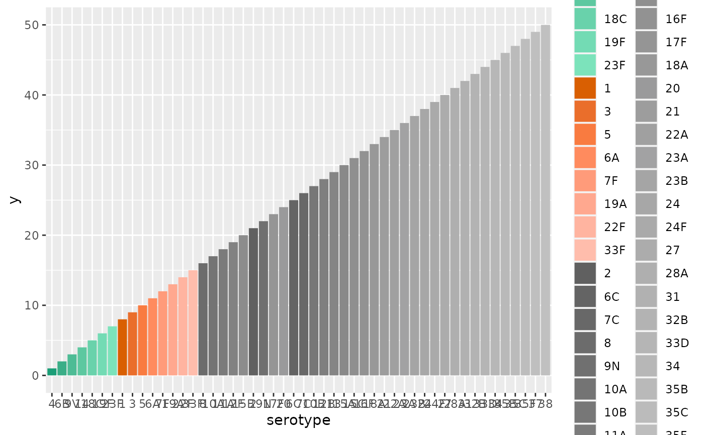

A ggplot scale for pneumococcal serotypes that keeps PCV groups together
scale_fill_serotype.RdThe scale groups colours by PCV group, but it is important to have the source
data using the same levels as this scale otherwise the colour legend will be
ordered in a different sequence. This can be achieved using relevel_serotypes,
Usage
scale_fill_serotype(
...,
palette_fn = scales::brewer_pal(palette = "Dark2"),
undefined = "#606060",
exprs = rlang::exprs()
)Arguments
- ...
Arguments passed on to
ggplot2::scale_fill_manualvaluesa set of aesthetic values to map data values to. The values will be matched in order (usually alphabetical) with the limits of the scale, or with
breaksif provided. If this is a named vector, then the values will be matched based on the names instead. Data values that don't match will be givenna.value.aestheticsCharacter string or vector of character strings listing the name(s) of the aesthetic(s) that this scale works with. This can be useful, for example, to apply colour settings to the
colourandfillaesthetics at the same time, viaaesthetics = c("colour", "fill").breaksOne of:
NULLfor no breakswaiver()for the default breaks (the scale limits)A character vector of breaks
A function that takes the limits as input and returns breaks as output
na.valueThe aesthetic value to use for missing (
NA) values
- palette_fn
a function that returns a set of colours for a number of levels. Such functions can be obtained from things like
scales::brewer_pal(...)- undefined
the colour for the last group which is assumed to be the
Unknowntypes- exprs
a list of formulae with a predicate on the LHS and a PCV group name on the RHS. which are interpreted as the parameters for a
dplyr::case_whencall. This must be protected against interpretation by wrapping it inrlang::exprs(). The predicates are tested againstavoncap::serotype_data$mapand could use any of the following columns 'c("4", "6B", "9V", "14", "18C", "19F", "23F", "1", "3", "5", "6A", "7F", "19A", "22F", "33F", "8", "10A", "11A", "12F", "15B", "2", "9N", "17F", "20")','c(TRUE, TRUE, TRUE, TRUE, TRUE, TRUE, TRUE, FALSE, FALSE, FALSE, FALSE, FALSE, FALSE, FALSE, FALSE, FALSE, FALSE, FALSE, FALSE, FALSE, FALSE, FALSE, FALSE, FALSE)','c(TRUE, TRUE, TRUE, TRUE, TRUE, TRUE, TRUE, TRUE, TRUE, TRUE, TRUE, TRUE, TRUE, FALSE, FALSE, FALSE, FALSE, FALSE, FALSE, FALSE, FALSE, FALSE, FALSE, FALSE)','c(TRUE, TRUE, TRUE, TRUE, TRUE, TRUE, TRUE, TRUE, TRUE, TRUE, TRUE, TRUE, TRUE, TRUE, TRUE, FALSE, FALSE, FALSE, FALSE, FALSE, FALSE, FALSE, FALSE, FALSE)','c(TRUE, TRUE, TRUE, TRUE, TRUE, TRUE, TRUE, TRUE, TRUE, TRUE, TRUE, TRUE, TRUE, TRUE, TRUE, TRUE, TRUE, TRUE, TRUE, TRUE, FALSE, FALSE, FALSE, FALSE)','c(TRUE, TRUE, TRUE, TRUE, TRUE, TRUE, TRUE, TRUE, TRUE, TRUE, FALSE, TRUE, TRUE, TRUE, TRUE, TRUE, TRUE, TRUE, TRUE, TRUE, TRUE, TRUE, TRUE, TRUE)','c(FALSE, FALSE, FALS a default option of the formTRUE ~ "Non PCV serotype"must exist to capture unmatched items.
Examples
x = rlang::exprs(
PCV7 ~ "PCV7",
PCV15 ~ "PCV15-7",
TRUE ~ "Non-PCV15 serotype"
)
ggplot2::ggplot(
avoncap::phe_serotypes %>% dplyr::mutate(y=dplyr::row_number()),
ggplot2::aes(x=serotype, y=y, fill=relevel_serotypes(serotype,exprs=x))
)+ggplot2::geom_bar(stat="identity")+
scale_fill_serotype(exprs=x)
